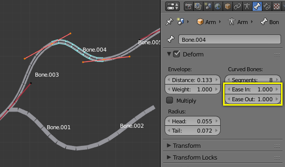

Bendy Bones 软骨骼¶
Bendy Bones（B-Bones）是一种简单的方法取代许多小型刚性骨骼长链的方法。弯曲骨骼的常见用于脊柱模型或面部骨骼。
Technical Details 技术细节¶
Blender将骨骼看成通过骨骼关节的贝塞尔曲线的一部分. 每个*段数* 将弯曲并滚动以遵循这无形贝塞尔曲线代表此的曲线细分点。曲线两端的控制点是骨骼的端点。 样条骨（B-bones）的形状可以是受控制使用一系列的属性或间接邻近的骨骼(即第一个子级和父级). 骨骼的两端的特征构成手柄以控制曲率。
当使用 B-bone 作为约束目标 数据ID 提供跟随曲线的选项。
Note
然而，如果骨骼用作目标，而不是使几何体变形，则不考虑滚动。
Display 显示¶
只有骨骼可视化模式为 样条骨（B-bones） 才能看到这些段数。
当显示方式不是 样条骨（B-bones） 时, 骨骼总是显示为刚性棍形，即使骨骼段数仍然存在并且有效。 这意味着即使在例如 八面体 可视化的显示方式，如果链中的一些骨头有几段， 他们仍然会使他们的几何体平滑变形...
Rest Pose 重置姿势¶
样条骨（B-bones）的初始形状可以在编辑模式中定义为该骨骼的重置姿势。这对弯曲的面部特征（如弯曲的眉毛或嘴巴）很有用。
样条骨（B-bones）有两套Bendy Bone（软骨骼、弯曲骨骼）属性 - 一个用于编辑模式（即重置姿势/基础绑定Base Rig），另一个用于姿势模式 - 将它们的值相加，以获得最终的变换。
Example 示例¶

编辑模式的OLD 样条骨。 ToDo. |

贝塞尔曲线叠加在链上，其手柄放置在骨骼的两端。 |

相同的骨架在物体模式。 |
在图 编辑模式的OLD 样条骨。 ToDo. 我们连接了三个骨骼，每个骨骼由五段组成。
看图。 相同的骨架在物体模式。 ，我们可以看到骨骼的细分如何平滑地“融合”到彼此，即使是产生了滚动。

骨骼在姿态模式下，骨骼可视化： Bone.003有一段，Bone.004有四段，Bone.005有十六段。
Options 选项¶
Segments 段数¶
段数（Segments） 数字按钮允许你设置给定的骨骼被细分的段数。段数是在首端和尾端之间插入的小的，刚性的相连的子骨骼。这个设置越高，骨骼越平滑“弯曲”，但姿势计算负担越重...
Curve XY Offsets 曲线XY偏移¶
在垂直于骨骼的主（Y）轴的平面上施加曲线柄位置的偏移量。结果，手柄从原始位置每个轴向 (XY)进一步移动，使得曲线弯曲。
Roll 扭转¶
- Roll In, Out 扭转输入， 扭转输出
- 扭转值 (或围绕骨骼的主Y轴扭转)在每个段内插入起始和终止之间的扭转值。它应用旋转偏移给先前旋转的顶部。
- Inherit End Roll 继承尾端扭转
- ToDo.
Scale 缩放¶
- Scale In, Out 缩放输入，缩放输出
- 调整X和Z轴每个段的厚度的比例因子，即长度不受影响。与 Roll（扭转） 类似，只是它是每段内插的扭转。
Easing¶
- Ease In, Out
Ease In/Out 数字按钮,改变“长度” "auto" 贝塞尔曲线手柄分别控制骨的“首端手柄”和“尾端手柄”。
These values are proportional to the default length, which of course automatically varies depending on bone length, angle with the reference handle, and so on.

看看Bone.004：它有默认的In和Out值（1.0）。 |

Bone.004，In为2.0，Out为0.0。 |
{kind=link}
Custom Handle Reference 自定义手柄参考¶
样条骨（B-bones）可以使用自定义骨骼作为参考骨骼的手柄，而不是仅使用父/子骨骼。为此，在姿态模式下启用 使用自定义参考手柄 切换。如果没有指定，则样条骨（B-bones）将仅使用软骨骼（Bendy Bone）属性。当选项打开时，只需使用指定的骨骼，而不是尝试查找骨骼的邻近。
- Relative 相对
- 不用使用骨骼的端点作为3D空间中的绝对点，它可以计算参考骨骼远离其重置姿势的距离。 然后对骨骼自己的端点应用增量变换以获取手柄位置。这是有用的，如果自定义控制骨远离其目标。
Tip
Keying Set
“BBone Shape”键控设置包括所有Bendy Bones属性。
Example 示例¶

Bendy Bones属性的可视化。